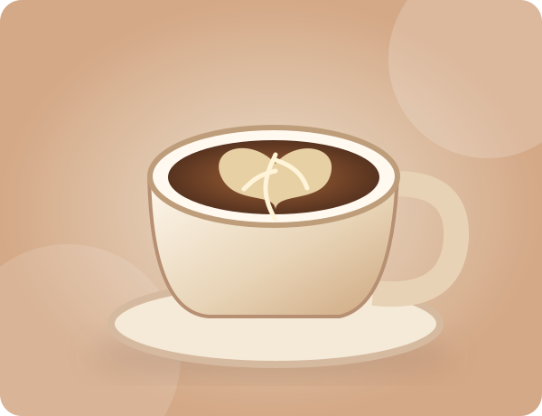
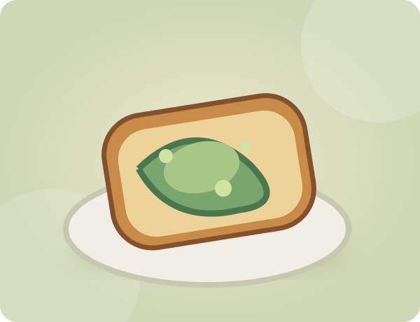
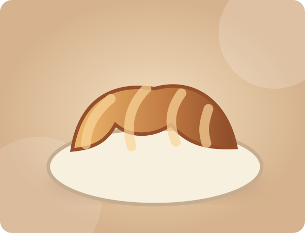
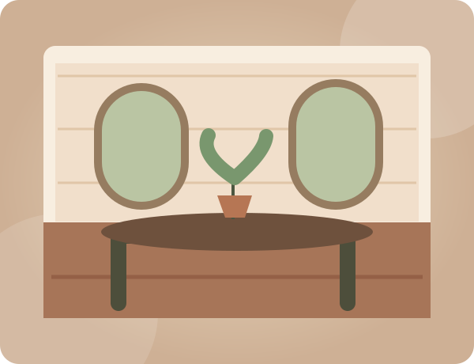

COFFEE / SIGNATURE
₹220Honey cinnamon latte
Espresso, mellow honey and a soft cinnamon finish.
✳ A GOOD PLACE TO LAND
Coffee worth lingering over. Food made with care. A place for the first sip, the last conversation, and everything in between.

FROM OUR KITCHEN
Espresso, mellow honey and a soft cinnamon finish.

Crisp sourdough, smashed avocado and fresh herbs.

Golden layers, baked for slow mornings.

A PLACE TO PAUSE
We imagined Saffron & Stone as the sort of café you wander into for a coffee and stay for an entire afternoon. Thoughtful plates, easy conversations and small details that feel like home.
Coffee brewed with patience
Fresh plates with a seasonal spirit
Room for good company